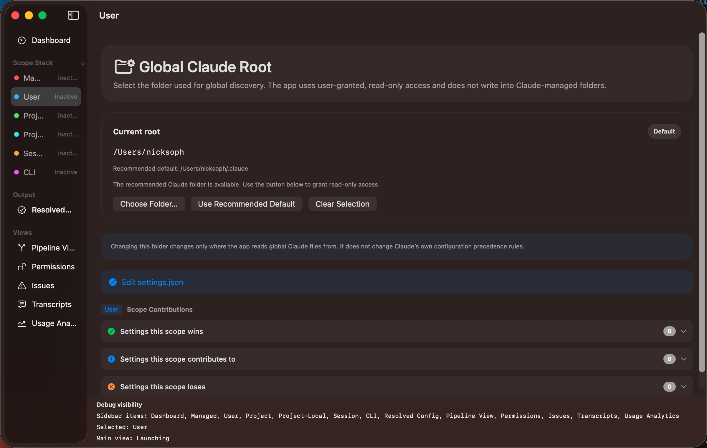

Getting Started
Claude Config Manager needs read access to the folders where Claude Code stores its configuration.
On first launch, the app guides you through authorising these locations.
First Launch
When you open the app for the first time, two things happen:
- Pipeline Introduction — An animated walkthrough explains how Claude Code
assembles configuration. You can replay this any time from Help → How Claude Code Works.
- Folder Authorisation — A sheet asks you to grant access to your global Claude
folder (usually
~/.claude). This is required for App Store compliance — the app
only reads files you explicitly authorise.

Authorising Your Global Root
The authorisation sheet gives you three options:
- Use Recommended Folder — Grants access to the standard
~/.claude
path. This is the right choice for most users.
- Choose Different Folder — Opens a file picker so you can select a custom
Claude root directory if yours is in a non-standard location.
- Skip for Now — Dismisses the sheet. The User scope will show as inaccessible
until you authorise a folder later via the User sidebar tab or Settings.
Tip: If you're unsure which folder to pick, the recommended path is almost always correct.
Claude Code uses ~/.claude by default.
Adding Project Roots
To inspect project-level configuration, navigate to the Project scope in the sidebar
and click Add Project. Select the root directory of any project that contains
.claude.json, CLAUDE.md, or .claude/ config files.
You can register multiple projects. Switch between them in the Project scope view, and the pipeline
will re-resolve using that project's files.
The Sidebar
The sidebar is your primary navigation. It is organised into three sections:
- Dashboard — top-level overview (always visible at the top)
- Scope Stack — the six configuration scopes in precedence order, with file and issue counts
- Output & Views — Resolved Config, Pipeline View, Permissions, Issues, Transcripts, and Usage Analytics
Colour dots next to each scope indicate its identity. Scopes with no discovered files show as "inactive".
Note: The app is read-only. It inspects your Claude Code configuration but does not modify
any files on disk.